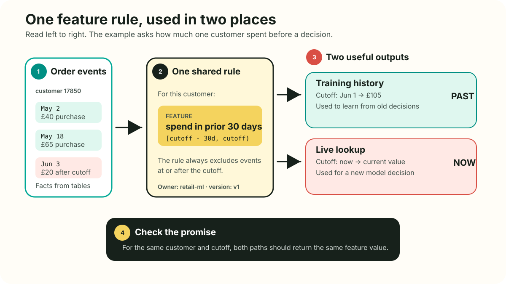
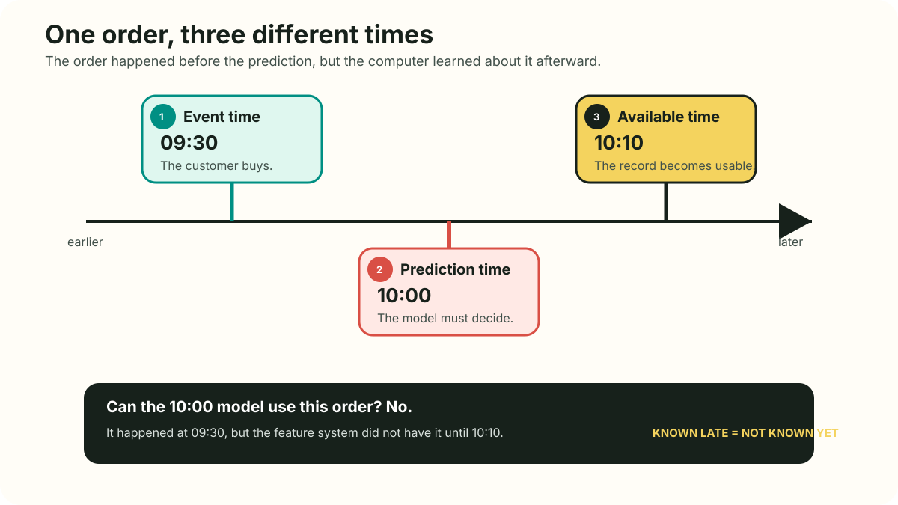
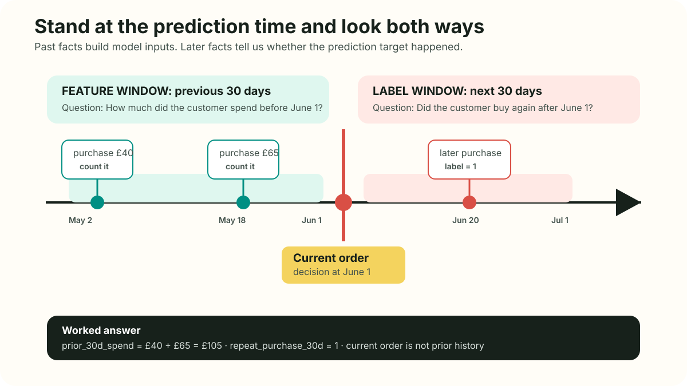
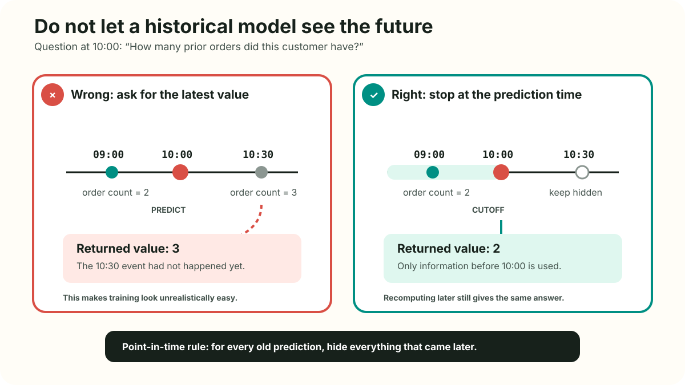
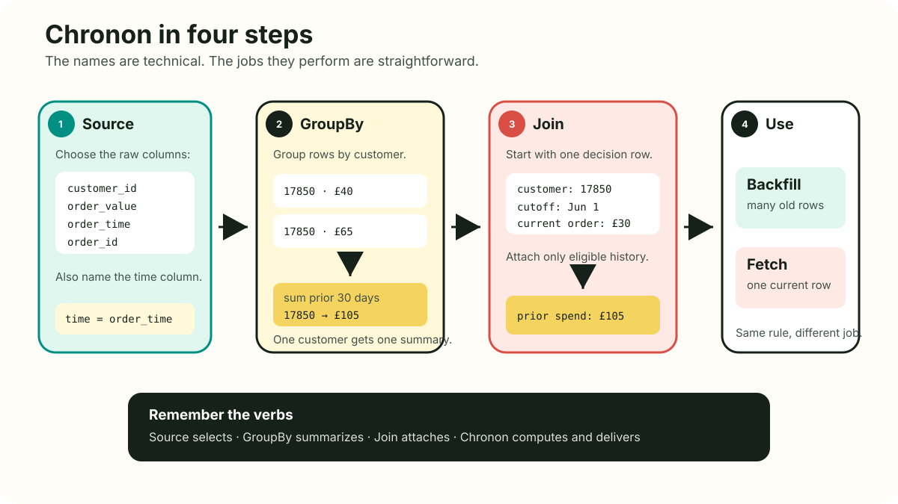
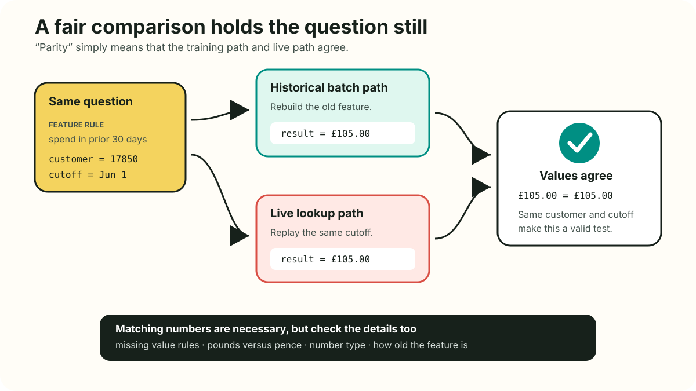
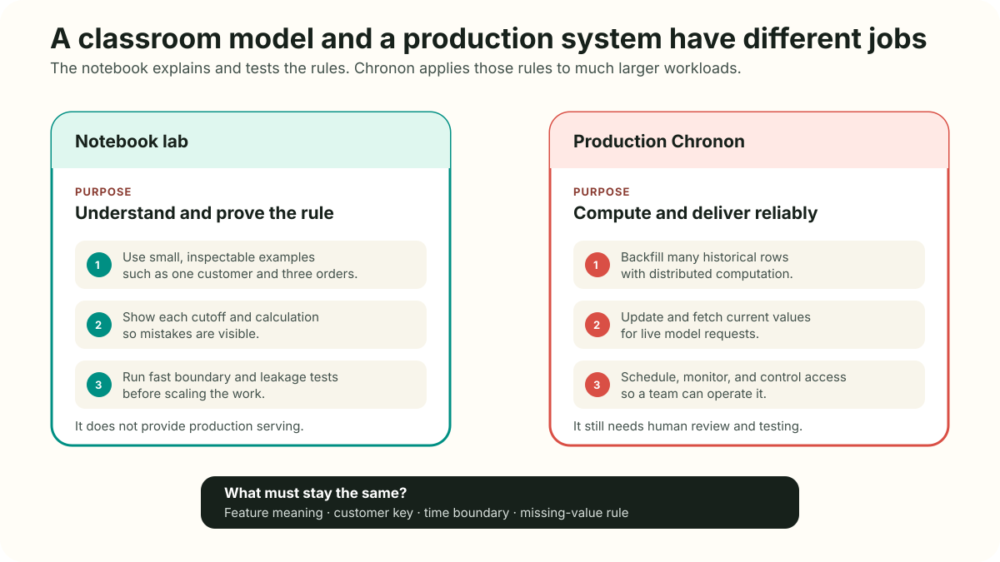
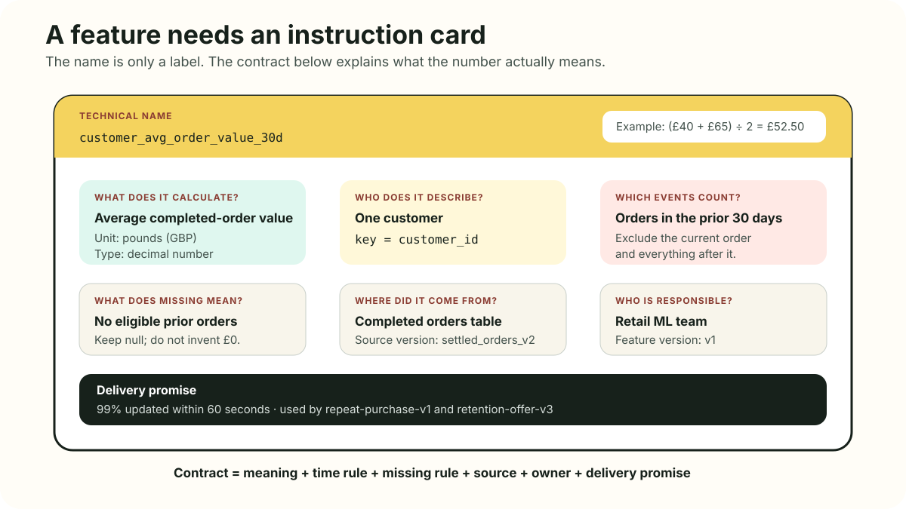
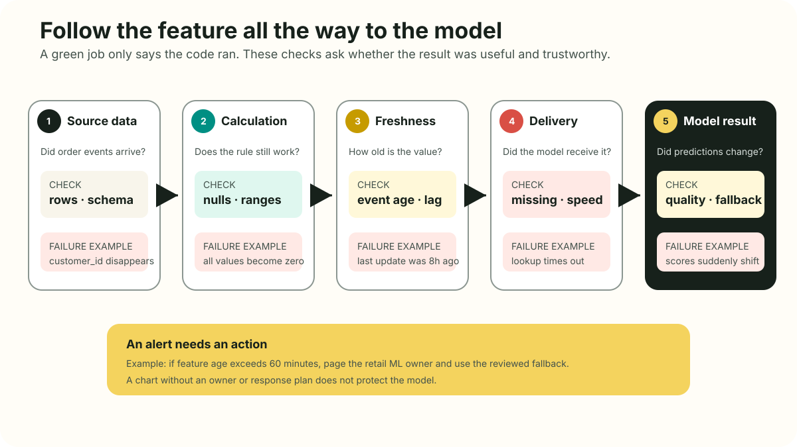
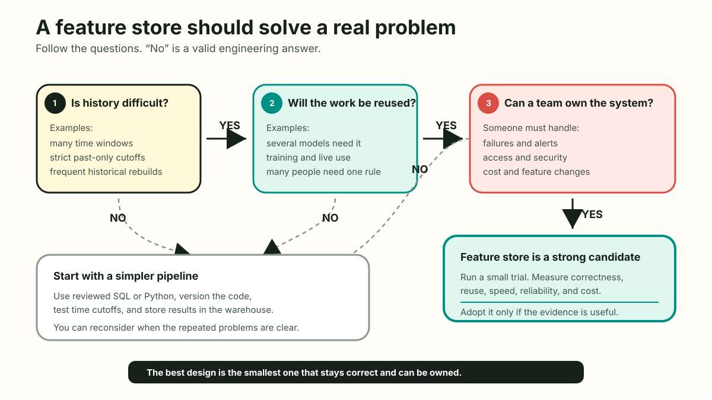

Feature engineering, time, and storage
with Chronon and UCI Online Retail.
Will this customer buy again within 30 days?
Use only information known before the prediction.
Use ← and → to navigate · press F for fullscreen
Define the cutoff.
Write the logic once.
Test both paths.
Name an owner and rules.
Important: a fast database is only storage unless the team also defines, tests, and owns the features.
Invoice IDs can start with C.
One invoice spans many lines.
Dec 2010 to Dec 2011.
ONE ROW MEANS
What was knowable when this order completed?
Caution: do not treat negative quantities or cancellation invoices as ordinary purchases.




FEATURE WINDOW
LABEL WINDOW
Exclude unless ordering is guaranteed.
Event time alone can still leak.
Feature store
purchase_sum_30d
cancel_count_90d
average_order_30d
Request context
current_order_value
active_offer
device_session
Counterexample: storing the current cart as history creates staleness and key-mismatch risk.

Historical backfill.
Fresh updates.
Temporal anchor.
source = Source(events=EventSource(
table="retail.orders",
topic="retail.orders.v1",
query=Query(
selects=select(
"customer_id", "order_id",
"order_value", "item_count",
),
time_column="ts",
),
))day windows
v1 = GroupBy(
sources=[source],
keys=["customer_id"],
aggregations=[Aggregation(
input_column="order_value",
operation=Operation.SUM,
windows=WINDOWS,
)],
accuracy=Accuracy.TEMPORAL,
online=True,
)Caution: more windows raise compute, storage, serving payload, and multiple-testing cost.
Left side owns time
customer_id
order_id
ts
v1 = Join(
left=prediction_events,
right_parts=[
JoinPart(
group_by=purchases_v1,
prefix="purchase"),
JoinPart(
group_by=cancellations_v1,
prefix="cancel"),
],
check_consistency=True,
)
offline = backfill(key, cutoff)
online = replay_fetch(key, cutoff)
assert offline.types == online.types
assert same_nulls(offline, online)
np.testing.assert_allclose(
offline.values, online.values,
rtol=1e-6, atol=1e-9)Within tolerance.
nulls · types · age

cd feature_engineering
uv sync
cp .env.example .env
uv run jupyter labfrom dotenv import (
find_dotenv,
load_dotenv,
)
load_dotenv(find_dotenv())The tutorial needs no API key. Local settings still belong in .env.
Train early.
Validate later.
Recompute stably.
Same model.
Same split.
Wrong features.

No value changes.
Payload and latency grow.
Historical values change.
Counterintuitive: an added column can be data-compatible yet still violate a serving SLA.

Freshness · age of feature value
Latency · time to fetch it
flowchart LR
D[Definition] --> S[Stream]
D --> B[Backfill]
S --> K[(Online)]
B --> O[(Offline)]
K --> F[Serve]
O --> R[Train]

PIT tests pass.
Parity meets SLA.
Alerts have humans.
Reuse beats cost.
One clear rule. Different ways to store and deliver it. Check what reaches the model.
Dataset statistics shown here were computed from the tutorial’s cached CSV.